FLOW 1
The invite — SMS + email
message + email · the first touchSMS as approved. The email now wears the 10x space brand: logo, giant warm heading, glowing violet CTA, and "valid 7 days from issue".
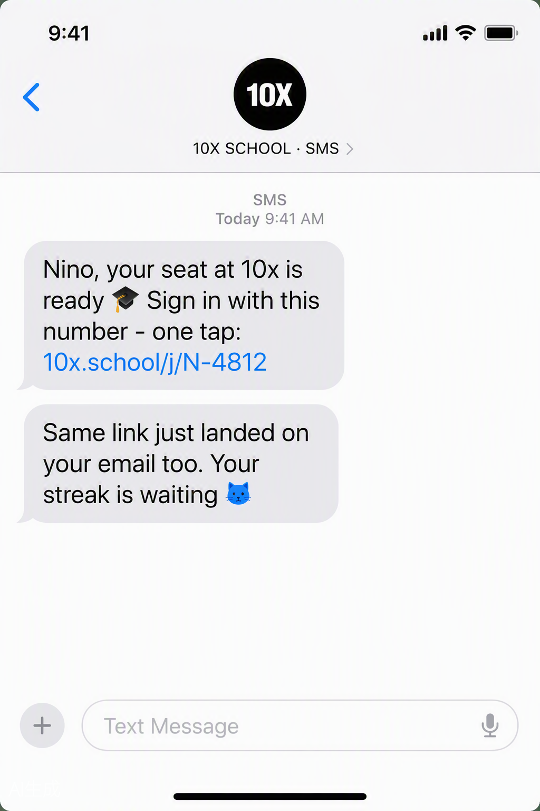
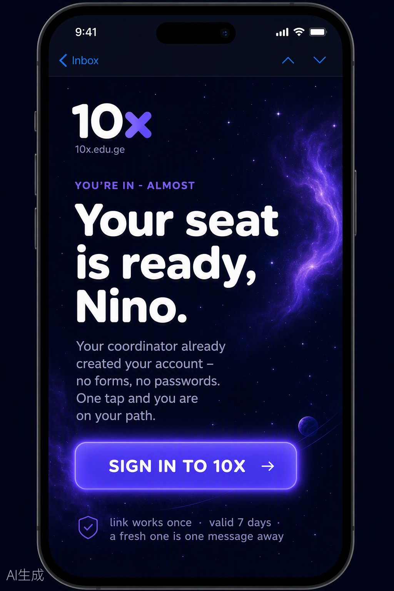
FLOW 2
Splash → first open
RA-01No "trade", no Rustavi. A game-loader: brand + one rotating motivational tip for newcomers while the session checks. Offline = sad Kata + a sentimental joke + Retry.
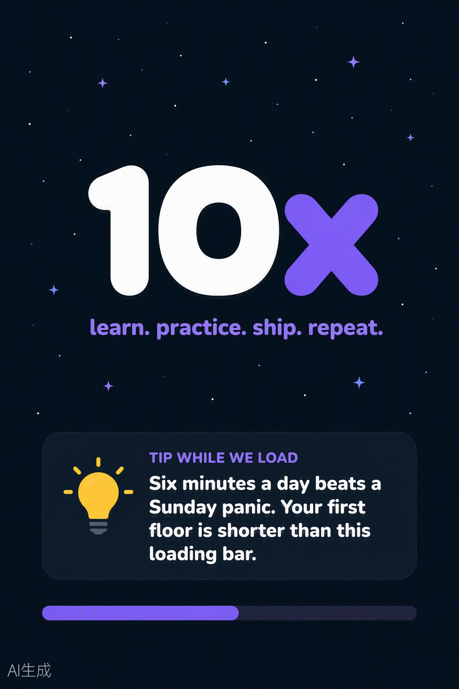
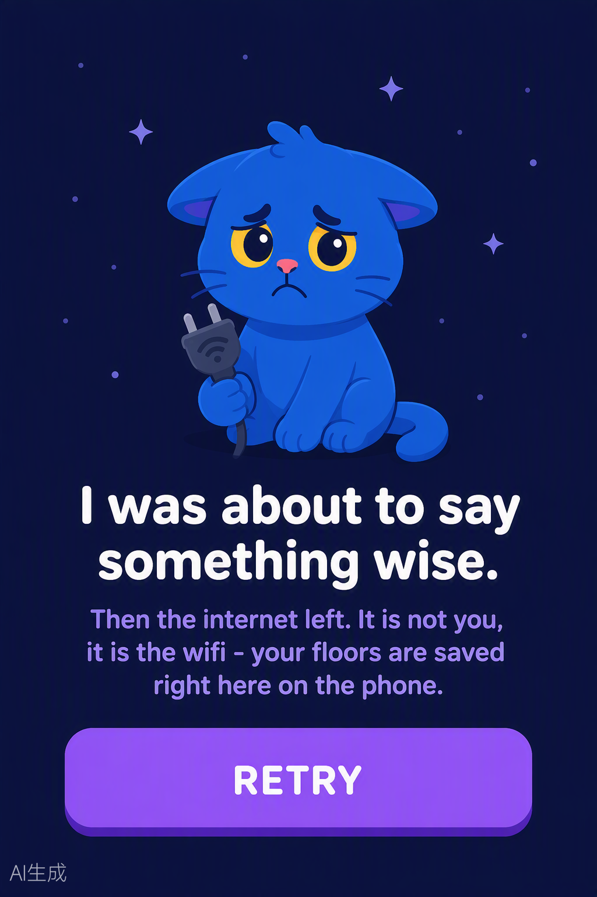
FLOW 3
Login — tabs, source-aware
RA-02Big Kata. Phone/Email tabs; the tab defaults to the invite channel. CTA sleeps until the format is valid; invalid shows red + a helpful hint + a disabled button.
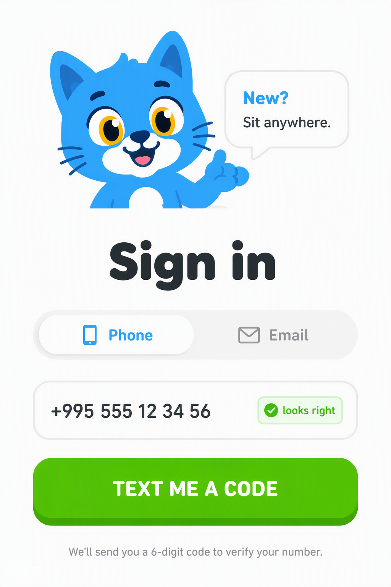
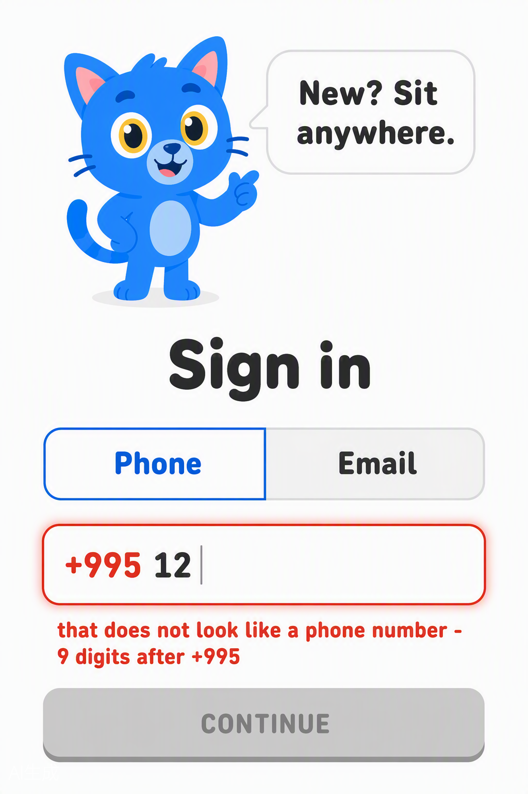
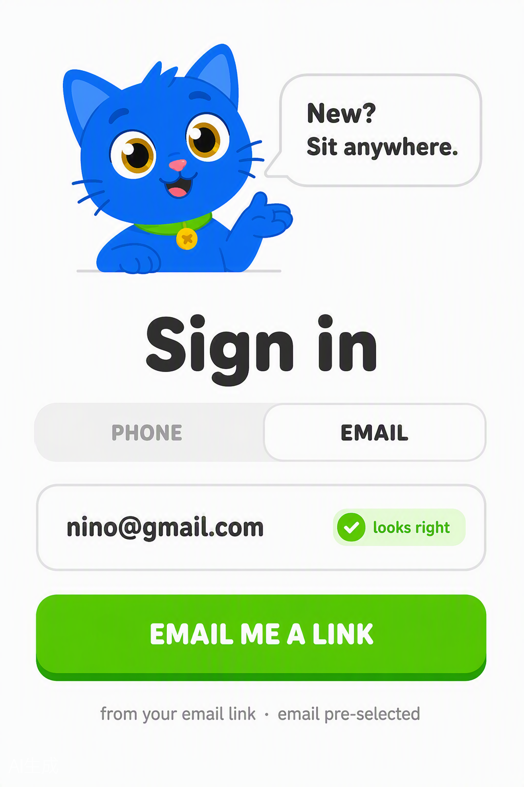
FLOW 4
Verify — OTP / link + failure states
RA-15 · RA-04Entering (auto-advance, self-submit at six), the wrong-code state (red boxes, "not it — 2 tries left"), the resend-ready state (active button + 3 left today), and the email link-sent card marked as the email route, 7-day validity.
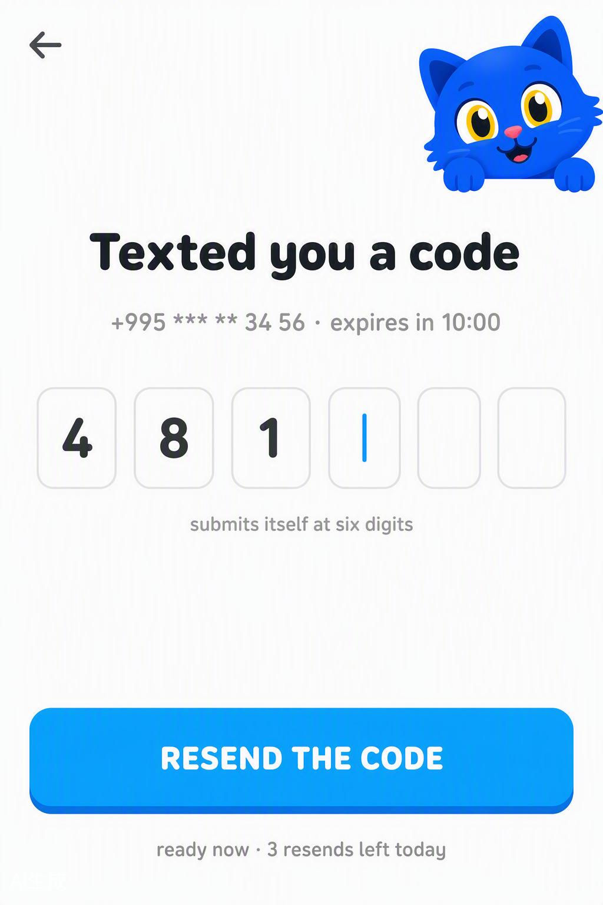
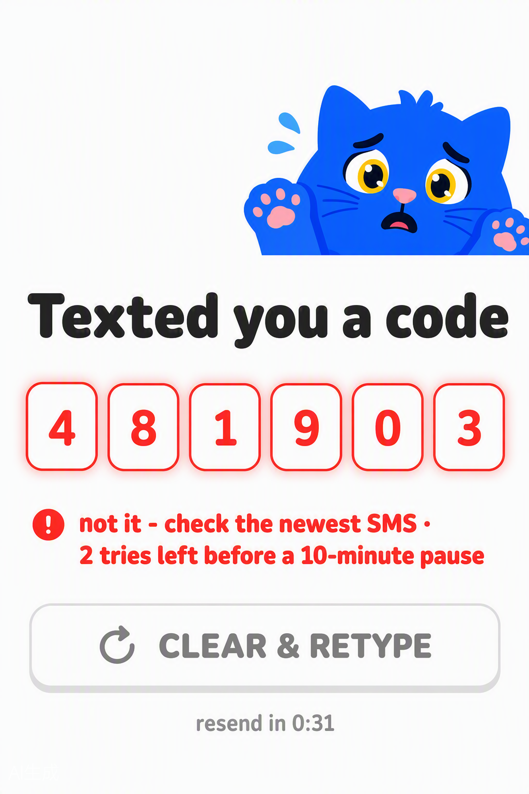
FLOW 5
Login failure → recovery
RA-06 · RA-07Not enrolled → coordinator line. Expired → fresh link in ten seconds. One recovery action each, no dead ends.
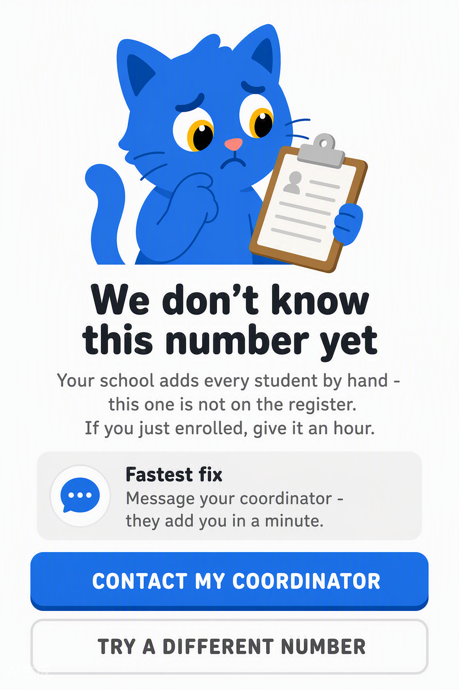
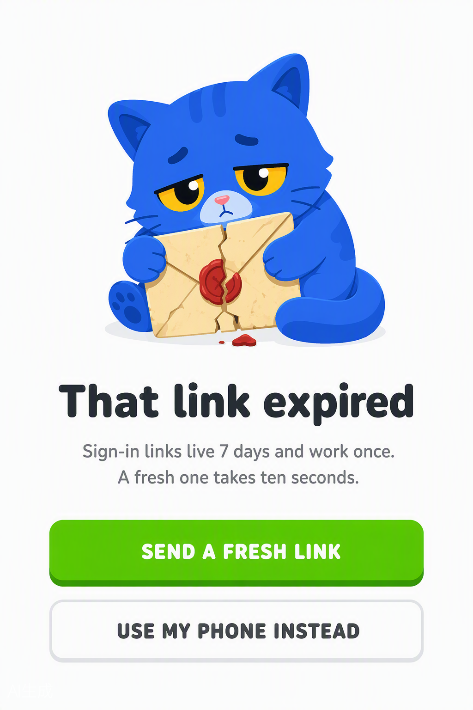
FLOW 6
Session expired → re-auth
RA-11Non-destructive: dimmed half-typed floor underneath, "Quick check it is you", the promise nothing was lost.
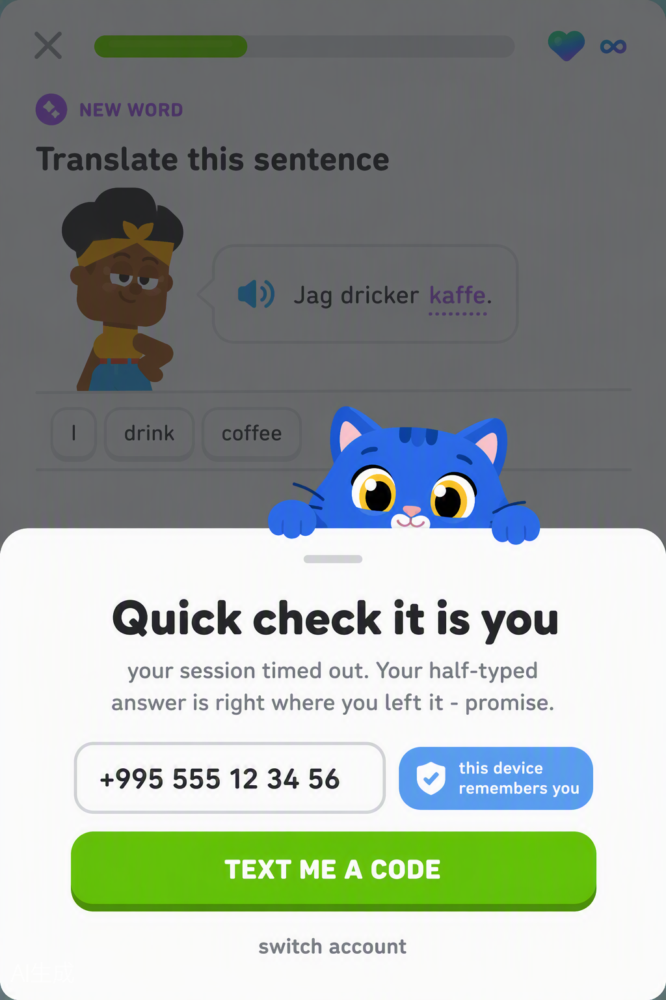
FLOW 7
Shared tablet → switcher
RA-08 · RA-09Two accounts one tap apart; switching never mixes or loses anyone’s work.
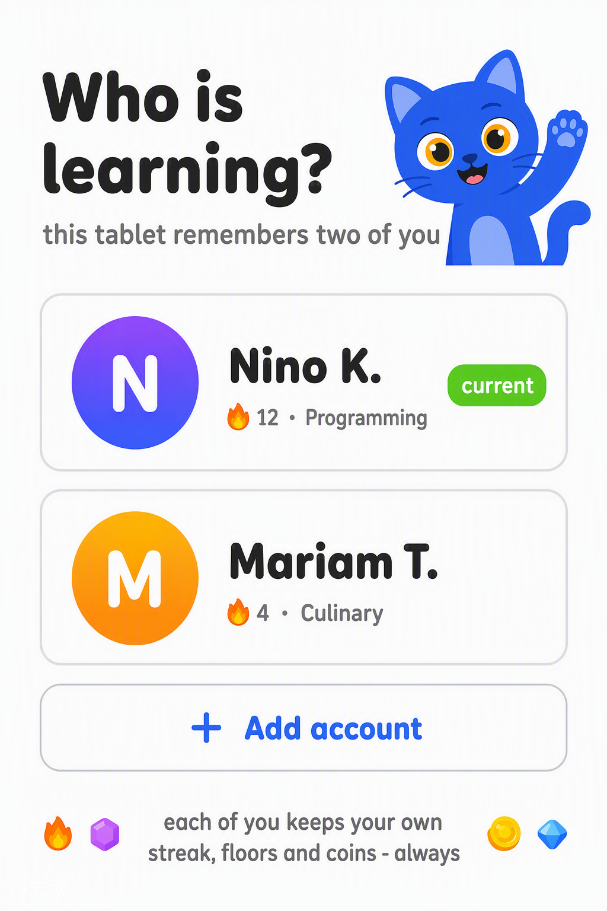
FLOW 8
Warm start — returning user
RA-10Valid session skips login: brand ≤1s, "welcome back, Nino · 🔥 12" pill, syncing bar, straight into the path.
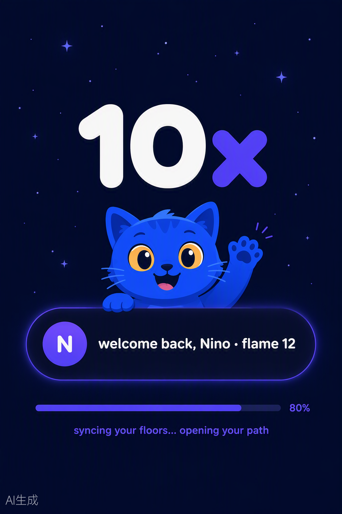